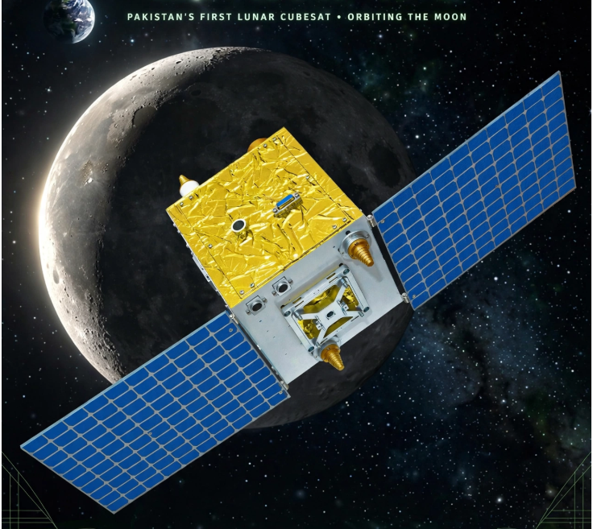
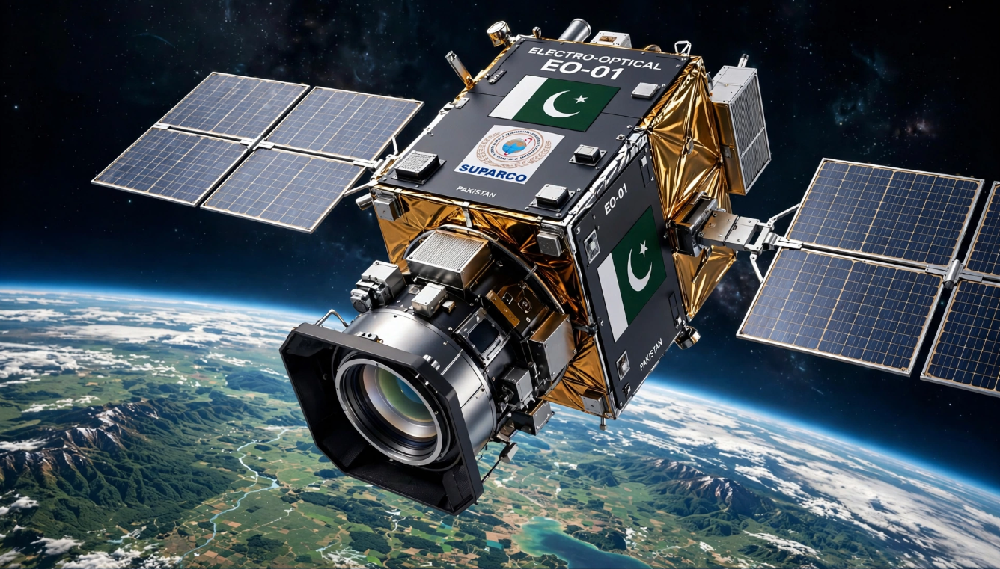
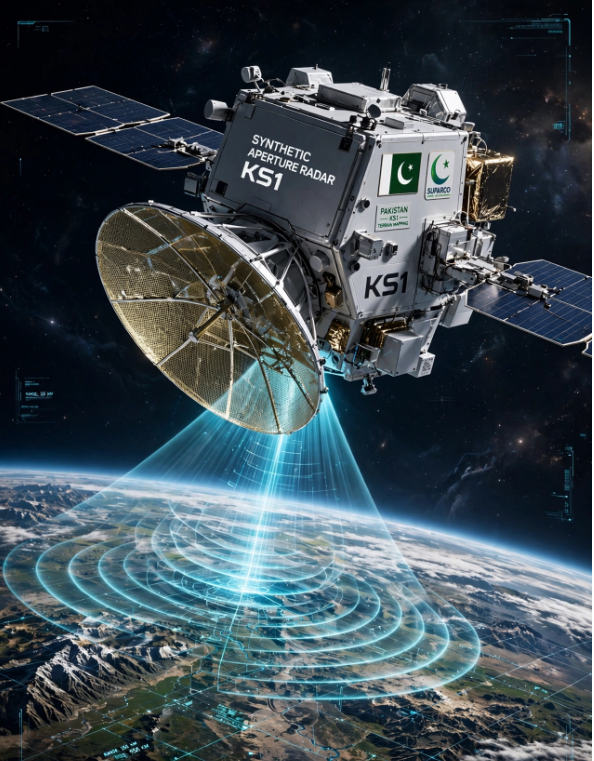
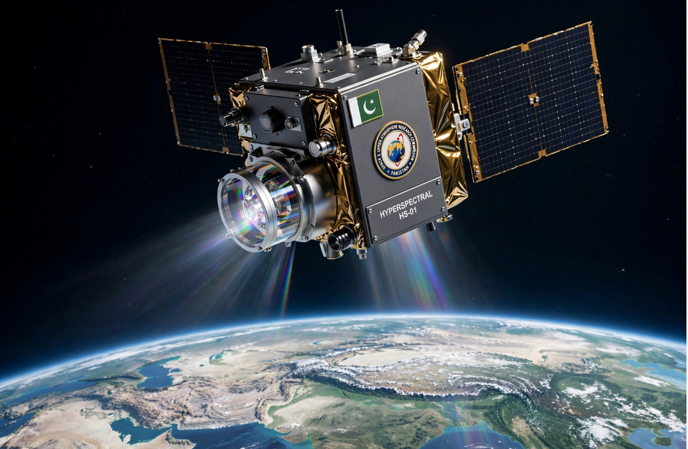
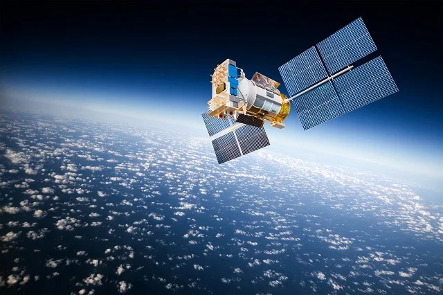
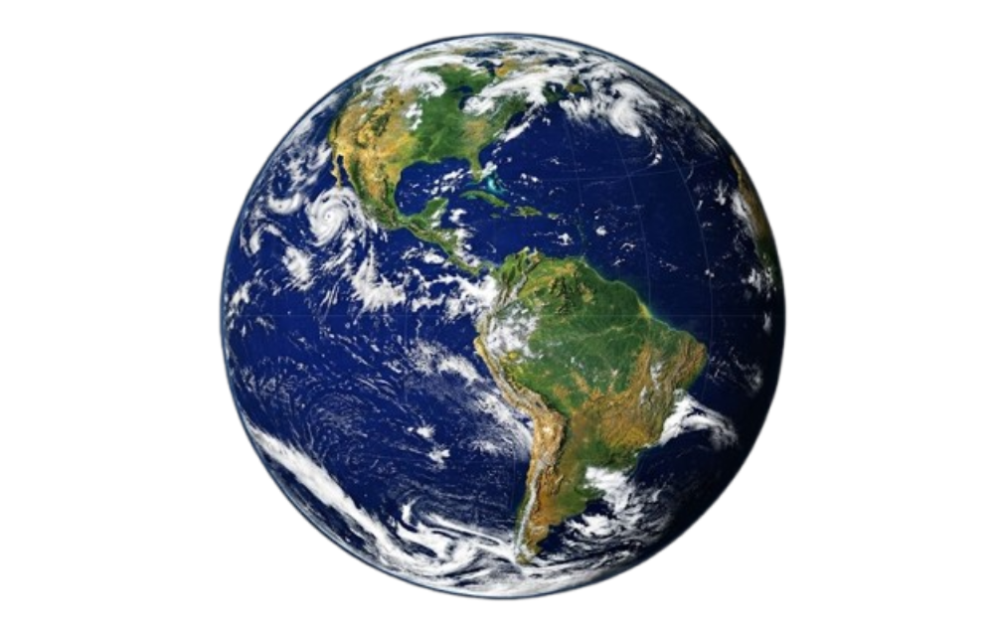
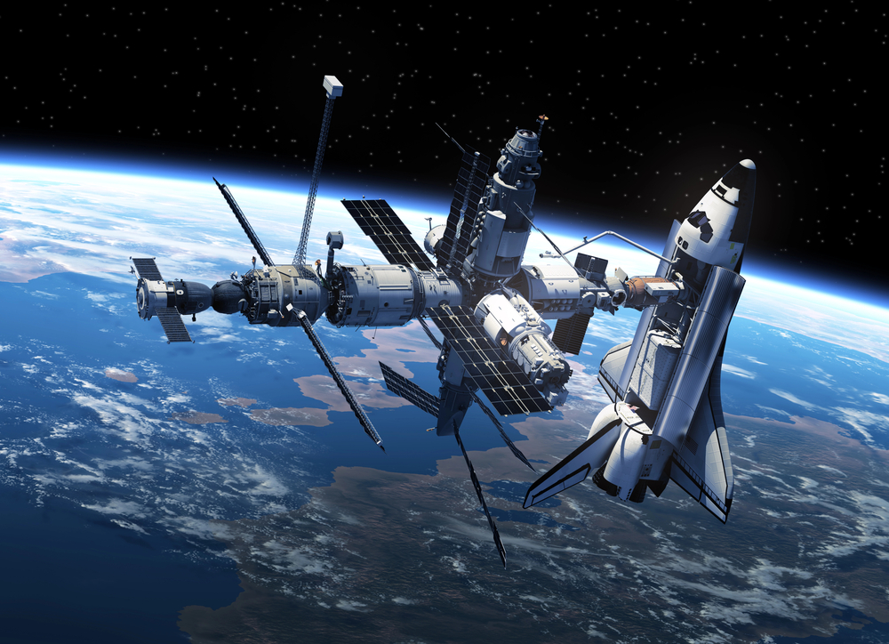
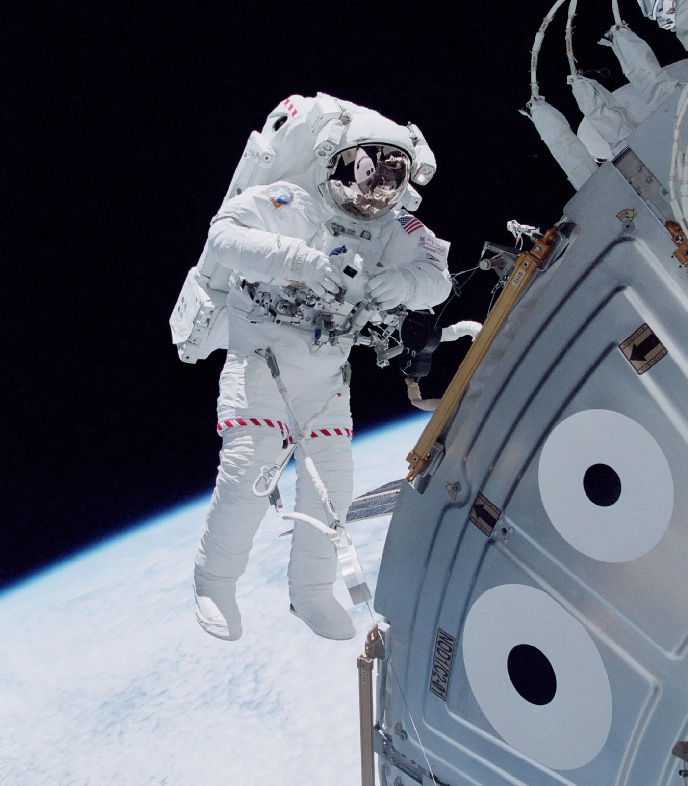

PAKISTAN SPACE & UPPER ATMOSPHERE RESEARCH COMMISSION
BEYOND THE HORIZON
SPACE PROGRAM
ACTIVE
01
SPACE
RESEARCH
02
SATELLITE
SYSTEMS
03
EARTH
OBSERVATION
PAKISTAN
SPACE / 01

BEYOND
THE HORIZON
2026 / SPACE
OUR JOURNEY INTO SPACE
EXPLORING BEYOND EARTH.
SUPARCO is shaping Pakistan's journey into space through science, satellite technology and Earth observation.
01
SPACE SCIENCE
Exploring space through scientific research and technology.
02
EARTH OBSERVATION
Understanding our planet through satellite technology.
SUPARCO
/ 01
SCIENCE
TECHNOLOGY
EXPLORATION
SCROLL TO EXPLORE
FROM THE FIRST LAUNCH TO THE NEXT HORIZON
BEYOND EVERY BOUNDARY.
A collection of milestones that trace Pakistan's journey through space science, satellite technology, Earth observation and lunar exploration.
11
KEY MISSIONS
1962—26
SPACE JOURNEY
SELECT A MISSION
CLICK ANY CARD TO BRING IT FORWARD





2025
MISSION 09 / 11
2025
MISSION 09 / 11
SYNTHETIC APERTURE RADAR
K
K
S1
Pakistan's first Synthetic Aperture Radar satellite, designed for continuous Earth observation capabilities.


SPACE TECHNOLOGY
WATCHING EARTH FROM ABOVE
Pakistan's space technology continues to expand its capabilities in Earth observation, remote sensing and satellite-based applications.
EXPLORE SATELLITES
01
EARTH
OBSERVATION
OBSERVATION
02
REMOTE
SENSING
SENSING
03
SPACE
TECHNOLOGY
TECHNOLOGY

ORBITAL SYSTEM
EARTH OBSERVATION
SUPARCO
VISUAL ARCHIVE
SPACE IN FRAME
A visual journey through Pakistan's space missions, satellites and the world beyond our horizon.
01 / 05
BEYOND
BEYOND
THE HORIZON
Exploring new frontiers

02 / 05
ORBITAL
ORBITAL
VISION

03 / 05
EARTH
EARTH
OBSERVED

04 / 05
SPACE
SPACE
TECHNOLOGY

05 / 05
INTO THE
INTO THE
UNKNOWN
SUPARCO / VISUAL ARCHIVE
VIEW FULL GALLERY
SUPARCO
SYSTEM ONLINE
MISSION CONTROL / 2026
01
02
03
LAT 24.8607° N
SIGNAL LOCKED
BEYOND THE HORIZON
EXPLORING THE UNKNOWN
PAKISTAN SPACE & UPPER ATMOSPHERE RESEARCH COMMISSION
THE MISSION CONTINUES
BEYOND THE HORIZON
EXPLORING THE UNKNOWN
PAKISTAN SPACE & UPPER ATMOSPHERE RESEARCH COMMISSION
THE MISSION CONTINUES